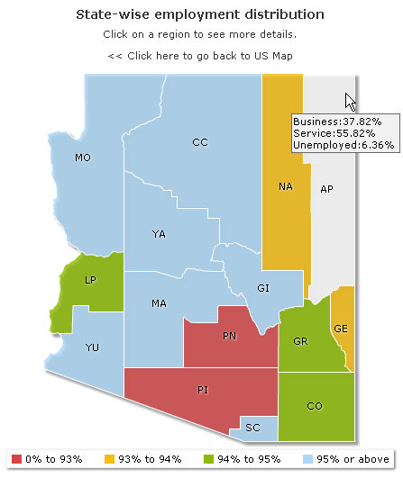

<?php
include("../Includes/DBConn.php");
include("../Includes/FusionCharts.php");
?>
<HTML>
<HEAD>
<TITLE>FusionMaps XT- Database Example</TITLE>
<SCRIPT LANGUAGE="Javascript" SRC="../../Maps/FusionCharts.js"></SCRIPT>
<?php
$link = connectToDB();
$strXML = "<map showCanvasBorder='0' borderColor='FFFFFF' connectorColor='000000' fillAlpha='80' hoverColor='FFFFFF' showBevel='0' legendBorderColor='F1f1f1' hoverColor='FFFFFF' legendPosition='bottom'>";
$strXML .= "<colorRange>";
$strXML .= "<color minValue='0' maxValue='93' displayValue='0%25 to 93%25' color='D64646' />";
$strXML .= "<color minValue='93' maxValue='94' displayValue='93%25 to 94%25' color='F6BD0F' />";
$strXML .= "<color minValue='94' maxValue='95' displayValue='94%25 to 95%25' color='8BBA00' />";
$strXML .= "<color minValue='95' maxValue='100' displayValue='95%25 or above' color='AFD8F8' />";
$strXML .= "</colorRange>";
$strXML .="<data>";
$strQuery ="select a.Internal_Id,a.entity_id,sum(data) datap from fcmap_distribution a group by a.Internal_Id,a.entity_id having a.Internal_Id='" . $_REQUEST['Internal_Id'] . "'";
$result = mysql_query($strQuery) or die(mysql_error());
if ($result) {
while($rs = mysql_fetch_array($result)) {
$strQuery ="select a.Internal_Id,a.entity_id,b.group_name,sum(data) datap from fcmap_distribution a, fcmap_group_master b where b.group_id=a.group_id group by a.Internal_Id ,a.entity_id, b.group_name having a.Internal_Id='" . $rs['Internal_Id'] . "' and entity_id='" . $rs['entity_id'] . "'";
$tooltext="";
$totEmp=0;
$result2 = mysql_query($strQuery) or die(mysql_error());
while($rs2 = mysql_fetch_array($result2)){
$tooltext .= $rs2['group_name'] . ":" . round((($rs2['datap'] / $rs['datap']) * 100),2) . "%25 \\n";
if ($rs2['group_name']!='Unemployed'){
$totEmp += round((($rs2['datap'] / $rs['datap']) * 100),2);
}
}
$strXML .= "<entity id='" . $rs['entity_id'] . "' value='" . $totEmp . "' link='Charts.php?" . $QUERY_STRING . "%26entity_id=" . $rs['entity_id'] . "' tooltext='" . $tooltext . "' />";
}
}
mysql_close($link);
$strXML .= "</data>";
$strXML .= "<styles><definition><style type='animation' name='animX' param='_xscale' start='0' duration='1' /><style type='animation' name='animY' param='_yscale' start='0' duration='1' /><style type='animation' name='animAlpha' param='_alpha' start='0' duration='1' /><style type='shadow' name='myShadow' color='FFFFFF' distance='1' />";
$strXML .= "</definition><application><apply toObject='PLOT' styles='animX,animY' /><apply toObject='LABELS' styles='myShadow,animAlpha' /></application></styles>";
$strXML .="</map>";
print renderChart("../../Maps/" . $_REQUEST['map'] ,"",$strXML,"Maps", 750, 460,0,0);
?>
</BODY>
</HTML>
|
Let's discuss the process flow of this page in details: |
- Like the previous page we include FusionCharts.php, DBConn.php and FusionCharts.js.
- We also create a variable - strXML to store map XML.
- We connect to database using connectToDB() function.
- Next we initialize root map element and add color range settings in XML.
- Then using SQL we sum up the total population of each entity or county (represented by entity_id ) of the selected state (represented by its Internal_Id)
|
| |
| $strQuery ="select a.Internal_Id,a.entity_id,sum(data) datap from fcmap_distribution a group by a.Internal_Id,a.entity_id having a.Internal_Id='" . $_REQUEST['Internal_Id'] . "'" |
| |
- Now we iterate through each entity/county of the map/state and get details like percentage of employment in Business, in Service and percentage Unemployed population.
- To achieve this, we create another array-recordset $rs2 using the following SQL query:
|
| |
| select a.Internal_Id,a.entity_id,b.group_name,sum(data) datap from fcmap_distribution a, fcmap_group_master b where b.group_id=a.group_id group by a.Internal_Id ,a.entity_id, b.group_name having a.Internal_Id='" . $rs['Internal_Id'] . "' and entity_id='" . $rs['entity_id'] . "'"; |
| |
- Here, $rs2 stores records having total of each group - Business, Service and Unemployed. So iterating through each, we calculate percentage of employment of each group and total employed population. This we did using the following calculation:
|
| |
while($rs2 = mysql_fetch_array($result2)){
$tooltext .= $rs2['group_name'] . ":" . round((($rs2['datap'] / $rs['datap']) * 100),2) . "%25 \\n";
if ($rs2['group_name']!='Unemployed'){
$totEmp += round((($rs2['datap'] / $rs['datap']) * 100),2);
}
} |
| |
- In the above code we also generate custom tool-text for each entity to show Percentage of population in Business, Service and Percentage of Unemployed population for each district/entity of that state's map. We create a variable - $tooltext and accumulate group name and corresponding percentage of each group in it.
- Moreover we also keep a total of employment percentage in $totEmp variable. This we did by skipping "Unemployed" group.
|
| |
|
Let's now discuss how to provide data to each entity of the map. In the above outer iteration through each entity we also add our code to add <entity> element.
|
| $strXML .= "<data>"...
$strXML .= "<entity id='" . $rs['entity_id'] . "' value='" . $totEmp . "' link='Charts.php?" . $QUERY_STRING . "%26entity_id=" . $rs['entity_id'] . "' tooltext='" . $tooltext . "' />";
}
}
mysql_close($link);
$strXML .= "</data>";
|
| |
- As entity id we use the "entity_id" field from the first array-recordset - $rs.
- We give total employed percent stored in $totEmp as value attribute of each entity.
- We set tooltext attribute from $tooltext variable.
- We also create links that drill-down to another page showing details of the clicked district/entity in maps.
|
|
Thus, we create entity data.
|
- Finally we apply style like XScale, YScale, alpha & shadow styles to the map using <styles> element and
- Render the map using renderChart() function from FusionCharts.php.
- $_REQUEST["map"] gives the map SWF name.
|
| |
| print renderChart("../../Maps/" . $_REQUEST['map'] ,"",$strXML,"Maps", 750, 460,0,0); |
Here is the screenshot of the drilled-down map
 |